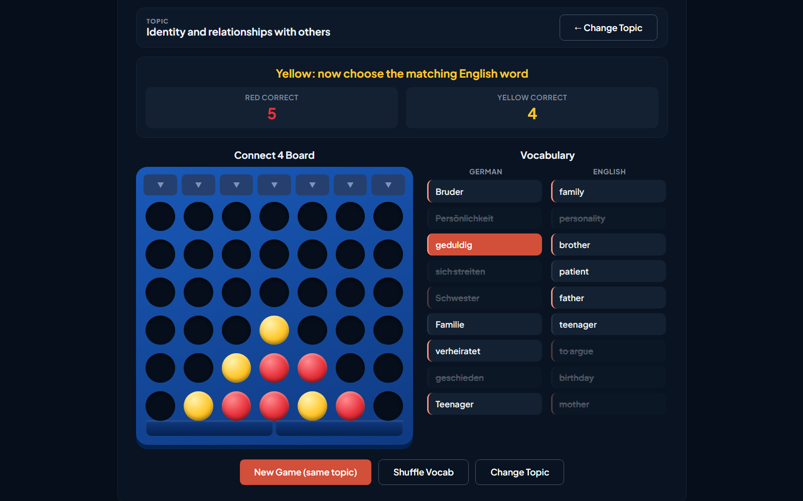
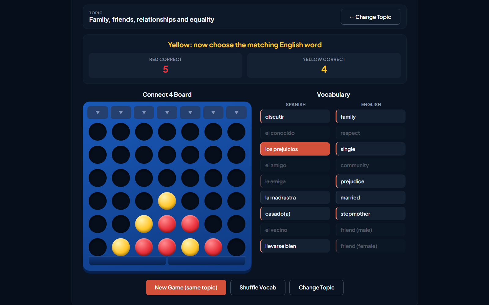

FrenchAQA GCSE (8652)
Puissance 4 across every theme of the new specification, from identity and culture to the environment.
Browse French
GermanAQA GCSE (8662)
Vier gewinnt, topic by topic: answer the vocabulary question, then drop a counter.
Browse German
SpanishEdexcel GCSE (1SP1)
Conecta 4 on the Edexcel themes, for two teams around one board.
Browse SpanishAll tools
3 of 3 shown
No tools match
Try a broader search or clear the filters.
Feedback or a game idea?
Spotted a wrong translation, used a game in a lesson, or want a topic or language added? I read every message, and many of these tools started as a teacher’s request.
Support the site
Savage Language Tools is the sister site to Savage Science Tools, built by a teacher in a UK secondary school in evenings and weekends. It stays free, with no adverts or sign-ups. If it has helped you or your pupils, a coffee keeps it going.
Buy me a coffee on Ko-fi